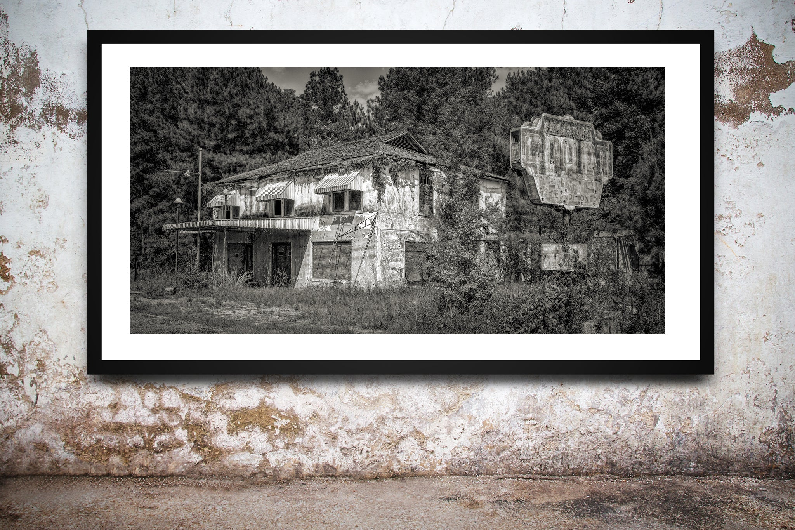
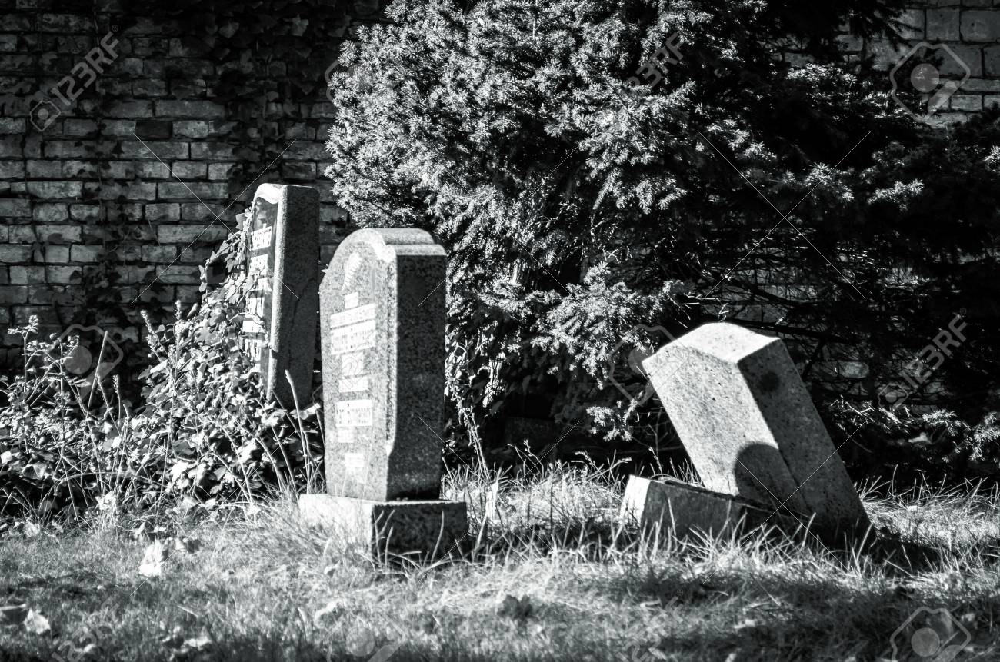
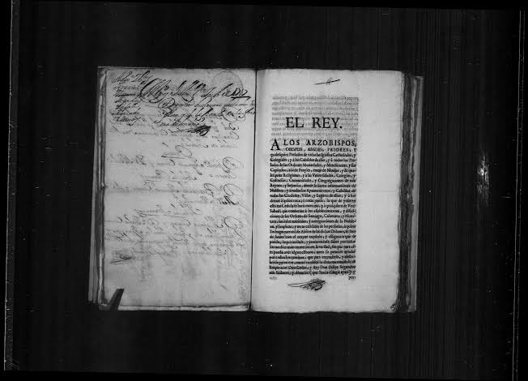

El jardín del olvido
Un espacio para reflexionar sobre lo que se ha perdido y lo que se ha conservado.
Volver a exposicionesUna flor guardada entre las páginas de un libro, todavía con un poco de color.

Una foto que ha perdido su brillo, pero conserva la memoria de un momento especial.

Un reloj que ha dejado de avanzar, pero que aún conserva el tiempo de un momento pasado.

Un nombre que ha sido borrado de un documento, pero que aún permanece en la memoria.